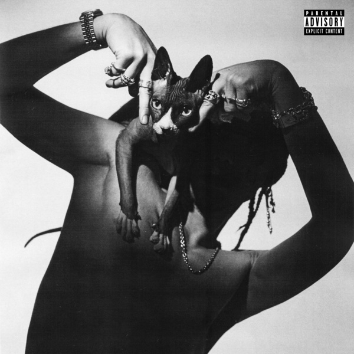

- ♥
- ♥
- ♥
- ♥
- ♥
Sik-K
(권민식 1994. 02. 26)
식케이(Sik-K)는 Show Me The Money 4 AOMG팀에서 활약하며 대중들에게 이름과 얼굴을 알렸다. 출연 이후에 자신의 크루인 YELOWS MOB과 음악 활동을 하다가, 박재범이 H1GHR MUSIC을 설립하며 창립멤버가 되었다.
2019년에 사랑과 이별이라는 감정의 흐름을 주제로 한 정규앨범 [FL1P]을 통해 뮤지션으로서의 입지를 굳혔고, 최근에는 아티스트의 Identity를 더 폭넓게 구현한 정규앨범 [HEADLINER(2020)], [HEADLINER (Deluxe)(2020)]까지 발표하며 끊임없이 노력하는 리얼 허슬러의 면모를 보여주었다.
이외에도 ‘깡 Official Remix(2020)’, ‘iffy (Prod. GroovyRoom)(2017)’, 과 같이 같은 소속사 내 아티스트들과 협업한 작업물에서도 꾸준히 좋은 모습을 보여주었으며, ‘RING RING (Feat.개코)(2016)’, ‘랑데뷰 (Rendezvous)(2016)’, ‘party (SHUT DOWN)(Feat. 크러쉬)(2017)’ 등의 히트곡들로 대중들에게 자신의 색을 각인시켰다.

H1GHR MUSIC의 시작과 현재를 함께 하고 있다. 압도적인 작업량과 매번 새로운 시도 속에서 사운드, 비주얼 모두 완벽하게 구현해내는 아티스트로 성장한 식케이(Sik-K)는 본인이 보여주고 들려주고자 하는 모습에 확신이 있는 H1GHR MUSIC의 대표 아티스트이다.